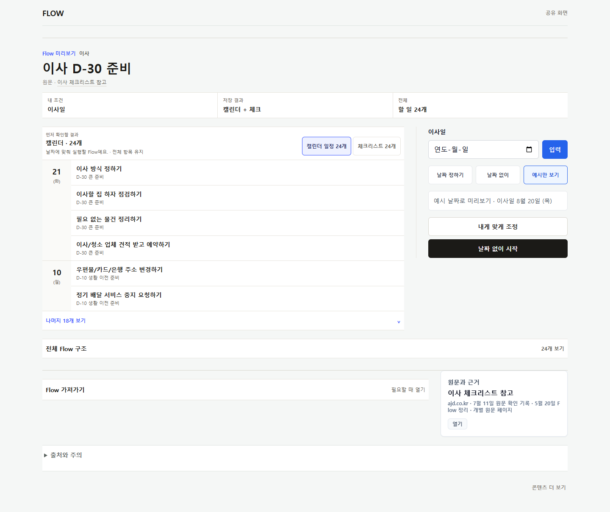
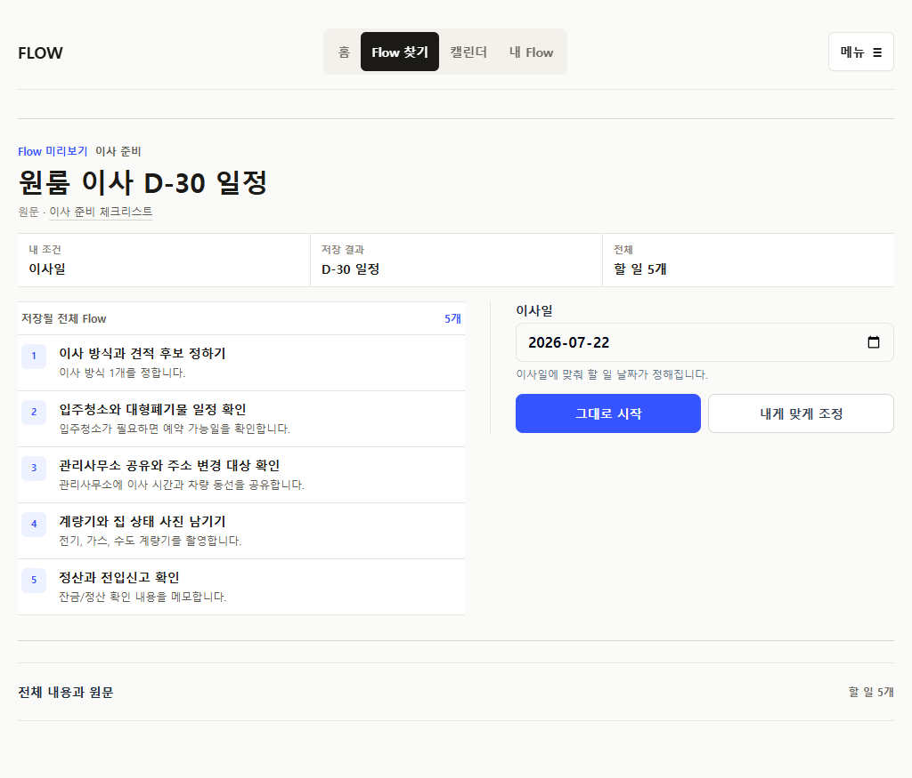
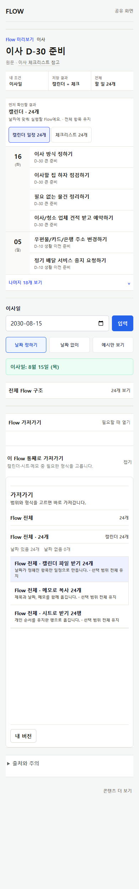
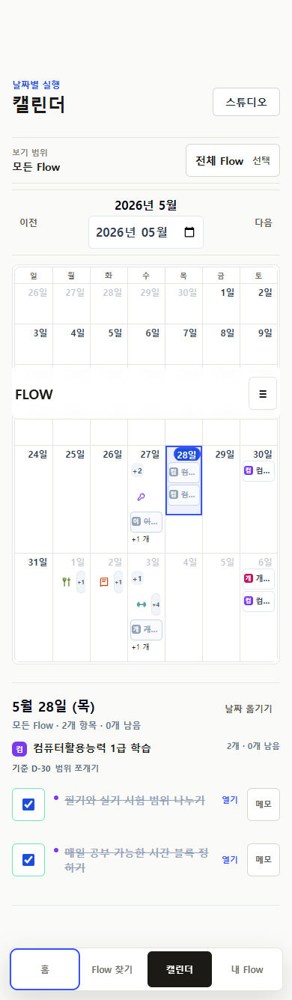
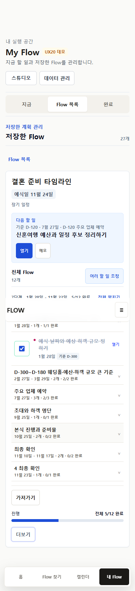
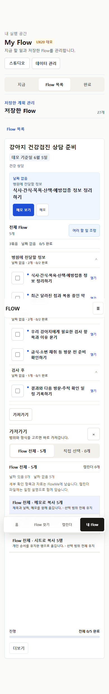

b3c8500 / PR #148 · closeout 4c5bbb34 / PR #149 · 8 personas × 3 sessions = 24 cells · 관찰 사용자 0명
P30은 P29 검토가 남긴 중첩 상태·모바일 correctness·발견성 gap을 실제로 닫았다.
모바일 export는 fixed layer와 교차 0, 초점 순서는 본문 우선, 저장 전은 결과 우선·조정은 한 목적, My Flow는 다음 행동 1개, Calendar는 50+ scope·compact identity, 루틴은 요약 우선으로 production에 서 있다.
전체 판정은 bounded_revision입니다 — 아키텍처·데이터 계약·4탭 IA·public /f는 keep, structural_reopen 대상은 없음. P29 검토가 지목한 Blocking/High 및 밀도 Medium은 production screenshot·source에서 실제 해소를 확인했습니다. 신규 Findings: Blocking 0 · High 2 · Medium 10 · Low 3(소유자 production 모바일 walkthrough로 H-2·M-5~M-10 보강 — §모바일 피드백). H-1은 P30이 명시적으로 미룬 /f(artifact-first)와 /flow-maps(legacy outline-first)의 공개 진입 문법 이원화이고, H-2는 콘텐츠 shape별(이사·결혼·홈트) 공개 상세가 서로 다른 화면처럼 읽혀 특히 결혼(타임라인)에서 “무엇을 눌러 어디서 저장하나” 흐름이 흐려진다는 점입니다 — 둘 다 밀도가 아니라 모델 일관성·신뢰의 단절입니다. 자동화·smoke·heuristic은 사용성 성공이 아니며, 실행 결과와 세션 간 persistence는 이 검토에서 직접 수행하지 못해 not_tested로 분리했습니다. 앱 코드는 수정하지 않았습니다.
쉬운 말로 한눈에 (아래 자세한 부분은 용어가 많으니, 이 카드만 읽어도 됩니다)
이 문서가 뭐냐 · 지금 라이브에 올라간 화면을 훑어보고, 그대로 둘지 / 조금 다듬을지 / 크게 다시 볼지를 정리한 것입니다. 실제 사용자 테스트는 아니고, 코드·화면 캐처를 본 것입니다.
결론 한 줄 · 큰 틀은 좋습니다. 그대로 두세요. 다만 몇 군데를 다듬으면 더 쉽워집니다. 갈아엎을 필요는 없어요.
고치면 좋은 것 (쉽게)
1. 같은 ‘이사’ Flow인데 들어오는 링크에 따라 첫 화면이 달라요 → 하나로 통일. (H-1)
2. 저장 화면에 버튼이 너무 많고 “시작”인지 “저장”인지 헷갈려요 → 결정 하나·말 하나로. (M-1)
3. 콘텐츠(이사·결혼·홈트)마다 상세 화면이 딱 다른 화면 같아서 매번 새로 배워요 → 뼈대를 같게. 결혼이 제일 심해요. (H-2)
4. 달력 칸 글자가 다 잘려서 뭐가 뭐지 안 보여요 → 색·개수로. (M-2)
5. 달력을 키보드로 넘기려면 날짜를 다 눌러야 해요 → 건너뛰기. (M-3)
6. 홈과 ‘Flow 찾기’가 역할이 겹첤요 → 홈은 ‘이어서 하기 + 다른 사람 사용 모습’으로. (M-5)
7. 찾기 카드는 원문 클릭되게, 버튼은 “더보기”, 후기·사용 수를 보여주기. (M-6)
8. ‘내 플로우’가 한 화면에 카드가 너무 많아 정신없어요 → 한 화면엔 한 가지에만 집중. (M-7)
9. 달력 항목 상세를 아래로 펼치지 말고 팝업(시트)으로. (M-8)
10. 같은 동작인데 화면마다 이름이 달라요(조정·시작·보관…) → 말을 통일. (M-9)
11. Flow 삭제가 어디 있는지 안 보여요 (지금은 ‘보관’으로 메뉴 안에 숨음) → 잘 보이게 + 되돌리기. (M-10)
자주 나오는 어려운 말 (짧게)
bounded_revision = 조금만 다듬기(갈아엎기 아님)
not_tested = 이번엔 직접 눌러보지 못함
fixture = 데모용 가짜 데이터
artifact-first = 결과부터 보여주기
진입 문법 = 들어올 때 첫 화면의 짜임새
provenance = 출처(어디서 온 내용인지)
급하면 이 카드만 보셔도 됩니다. 개발자·검증용 정밀한 근거는 아래 각 섹션에 그대로 두었습니다.
이번 검토의 근거와 한계 (evidence boundary)
이 검토는 실제 사용자 관찰이 아니다(observed users 0명). 근거는 네 층입니다. ① current_source — P30 final package(README.md · audit.md · route-evidence.json · journey-results.json · production-smoke/results.json · screenshot-manifest.json)와 현재 STATUS/ROADMAP/PRODUCT_PRINCIPLES를 GitHub main 4c5bbb34에서 직접 읽음. ② current_package_screenshot — canonical production smoke 캡처 13종(390/1024/1440, merge b3c8500 / deployment 5557201045)과 구현 캡처 17종을 직접 열어 확인. 이 검토의 production 화면 판단은 이 13종에 근거합니다. ③ 제한적 current_production_interaction — production focus-order trace(/my, /calendar)를 직접 읽어 초점 흐름을 분석. ④ 그 위의 heuristic_simulation. 결정적 한계: 이 환경에서 production 하위 route의 hydration 이후 클릭(저장·완료·reopen·라이브 배치/undo·클립보드 복사)과 세션 간 reload persistence를 직접 수행하지 못했다(inaccessible). 따라서 실행 결과와 persistence 판정은 not_tested로 분리했고, 화면·위계 판정과 명확히 구분합니다. 자동 E2E 304/304·unit 584/584·smoke 13/13은 구조·계약 증거이지 사용성 증거가 아닙니다.
실행 정보 · 전체 verdict
실행 정보
claude_design (시각·interaction·wireframe 중심)flowme2605.vercel.app · merge b3c8500 · deploy 5557201045current_source)current_package_screenshot)current_production_interaction)inaccessible → 실행 결과 not_tested)전체 판정
bounded_revision (keep_p30 아키텍처 · structural_reopen 없음)
확신도 4 / 5 · (관찰 evidence 부재로 5는 아님)
한 문장 근거 · P29가 지목한 모바일 correctness·밀도 gap이 production에서 실제로 닫혔고 계약 회귀가 없다 → keep_p30. 그러나 /f↔/flow-maps 진입 문법 이원화(H-1)와 대량·키보드 발견성 Medium이 남아 무조건 keep은 이르다 → bounded_revision. 구조는 건강해 structural_reopen은 불필요하다.
keep — 흔들면 안 되는 것
① source·personal overlay·run·occurrence·export identity 분리(P30 계약 불변) ② artifact-first save-before + 결과 우선 위계 ③ 모바일 export의 fixed-layer 교차 0 + 본문 우선 초점 순서(P30-01/02) ④ My Flow 다음 행동 1개 + secondary 1 + menu ⑤ Calendar 50+ scope collapse·selected-day full identity·undated sheet ⑥ 루틴 요약 우선 ⑦ 4탭 IA·public /f·primary 1+secondary≤2. 이 일곱은 P30의 성과이자 회귀 감시 대상이다.
0
Blocking
2
High (H-1·H-2)
10
Medium (M1–M10)
3
Low (L1–L3)
회귀 0
계약 regression
0
관찰 사용자
P29 검토가 이월한 gap → P30에서 확인한 해소
해소 모바일 export ↔ fixed CTA 교차 → intersectionArea 0, primary가 tabs 위로(P30-01). current_package_screenshot
해소 /my·/calendar 초점 순서 tabs 선행 → header→workspace→tabs ordered:true(P30-02). current_production_interaction
해소 save-before 행별 [수정] 밀도 → 초기 row-edit 0, 24항목은 명시 disclosure(P30-03). current_package_screenshot
해소 My Flow secondary peer 4개 → primary1·secondary1·나머지 menu(P30-04). current_package_screenshot
해소 undated 배치 미검증 → 10→8→undo10 stable ID fixture(P30-05). fixture_only
부분 월간 cell 시각 구분 → compact identity 도입, 그러나 대량 fixture에서 잔존(M-2). current_package_screenshot
Findings — Blocking 0 · High 2 · Medium 10 · Low 3
모든 finding에 route·viewport·재현·기대/실제·사용자 영향·evidenceKind·권장 조치 포함. 모든 조치는 composition/파생 계층이며 source·personal·run·occurrence·export 계약을 바꾸지 않는다. 이미 해소된 P29 항목이나 취향 차이를 새 백로그로 되살리지 않았다. 아래 §2는 검토 자체 finding(H-1·M-1~M-4·L-1~3)이고, 소유자 production 모바일 walkthrough에서 나온 H-2·M-5~M-10은 §모바일 피드백에 상세히 정리했다.
같은 이사 콘텐츠가 /f는 결과 우선 artifact-first, /flow-maps는 목록 우선 legacy — 진입 링크에 따라 다른 첫 화면·다른 결정 문법

/f/moving-d30-basic 1440 · 결과(캘린더 24개) 먼저 · 우측 결정영역 · primary 날짜 없이 시작
/flow-maps/moving-d30 1024 · 목록(저장될 전체 Flow 5단계) 먼저 · 그대로 시작 / 내게 맞게 조정route /f/moving-d30-basic vs /flow-maps/moving-d30 · viewport 390·1024·1440 · 재현 두 route 모두 “이사 D-30” 콘텐츠를 다루지만, /f는 실제 결과(캘린더/체크리스트 미리보기)를 먼저 보이고 primary가 날짜 없이 시작인 반면, /flow-maps는 번호가 붙은 단계 목록(1~5)을 먼저 보이고 결정은 그대로 시작 / 내게 맞게 조정 2버튼이다. 두 화면의 정보 순서·동사·조정 모델이 서로 다르다.
기대 PRODUCT_PRINCIPLES “첫 화면은 어떤 실행 artifact가 되는지 답한다” + 하나의 저장 문법. 실제 P30-07이 /f의 dead conditional은 제거했으나 /flow-maps는 active production consumer라 legacy를 명시적으로 보존(P30-LEGACY-COMPOSITION-ACTIVE · removalDecision: deferred_active_consumer). 즉 이 이원화는 버그가 아니라 알려진 미결이다. 그러나 사용자는 그 경계를 모르므로, 원문/검색을 통해 /flow-maps로 들어온 사용자(P6)와 공유 링크로 /f에 들어온 사용자(P1·P5)는 서로 다른 제품을 경험한다.
영향 · provenance·신뢰 사슬(§6-1)의 첫 접점에서 “같은 Flow가 같은 객체인가”가 흔들린다. 재방문 시 어느 경로로 다시 왔는지에 따라 조정 모델이 달라 학습이 전이되지 않는다. evidenceKind current_package_screenshot(두 production 캡처) + current_source(route-evidence P30-07)
조치 /flow-maps를 /f와 같은 artifact-first save-before로 수렴(legacy는 rollback flag 뒤 보존). 계약·라우트·데이터 불변, composition만 → P31-1. High인 이유: 밀도가 아니라 제품 정체성·신뢰 사슬의 단절이기 때문.
/f 저장 결정 영역이 여전히 3구획 — 날짜 입력 + intent 3버튼 + [조정] + primary가 공존하고, 동사가 시작/저장으로 섞임

/f 390 · 결과·토글·목록은 정리됐으나 하단 이사일 입력 + 날짜 정하기/없이/예시 + 전체 Flow + 가져가기가 순차로 쌓임route /f/moving-d30-basic · viewport 390·1440 · 재현 P30-03이 행별 수정 밀도를 없앤 것(초기 row-edit 0)은 확인된다. 그러나 결정 영역은 이사일 [입력] + [날짜 정하기][날짜 없이][예시만 보기] segmented + (1440)[내게 맞게 조정] + primary [날짜 없이 시작]이 여전히 peer로 공존한다. marker P30-SAVE-BEFORE-SINGLE-DECISION은 save-before가 한 표면임을 보증하지만, 그 표면 안의 결정 요소 수는 하나가 아니다.
기대 필수 anchor만 inline, 나머지 intent는 조정 안으로, 동사 통일. 실제 primary 동사가 시작인데 저장이 실제 동작(My Flow에 남음) — /flow-maps의 그대로 시작, receipt의 저장과 어휘가 갈린다(L-1 연동).
영향 · 첫 viewport에서 “무엇을 누르면 무엇이 남나” 예측이 약간 흐려짐. evidenceKind current_package_screenshot(public-export-390 · save-before-1440) + heuristic_simulation
조치 anchor inline·intent를 조정으로·동사 저장 통일 → P31-2. composition만.
월간 grid가 거의 동일하게 축약된 제목 벽이 됨 — 색점·개수는 있으나 truncated 제목이 구분에 기여하지 못함
route /calendar?demo=ux50 · viewport 1024·1440 · 재현 compact identity(짧은 label·initial·overflow count)는 도입됐고 selected-day가 full identity를 보존한다(P30-05, 확인). 그러나 대량 fixture에서 grid의 거의 모든 cell이 이사 준비 F…로 잘려, 색 initial + “+N”만 실질 구분자가 된다. 제목 축약 텍스트는 화면을 채우지만 정보가치가 낮다.
기대 cell은 색·개수로 “무엇이 얼마나”를 주고 상세는 selected-day로. 실제 truncated 제목이 여전히 cell 폭을 지배 — full accessible name은 보존(스크린리더 OK)되나 눈으로는 구분이 약하다. 주의: ux50 fixture가 이사 준비 Flow NN 동명 다수라 실제보다 과장될 수 있음 → heuristic_simulation + 관찰(Q4).
영향 · 20~60 Flow scale에서 월간 뷰의 스캔 비용. evidenceKind current_package_screenshot(calendar-compact-identity-1024 · desktop-calendar-1440) + fixture_only
조치 cell은 색+개수 우선, 제목 축약 의존 제거, 상세는 selected-day agenda로 → P31-4. 파생 표기만.

/calendar?demo=ux50 1440 · 대부분 cell이 이사 준비 F… 축약 반복 · 색 initial·+N이 실질 구분자모바일 Calendar 키보드 순서가 정렬은 맞지만 agenda·tabs 도달까지 초점 정지 ~76회 — 저시력·키보드 사용자에 과부하

/calendar?demo=ux20 390 · header(0)→scope/grid→ … →tabs(index 76) · ordered:true지만 grid 날짜 버튼을 모두 통과route /calendar?demo=ux20 · viewport 390 · 재현 production focus trace를 직접 읽음: headerIndex 0 → workspaceIndex 3 → tabsIndex 76, ordered:true. P30-02 목표(본문이 tabs보다 먼저)는 달성. 그러나 그 사이에 월간 grid의 날짜 버튼 40여 개 + 일정/루틴 overflow가 모두 초점 정지점이라, 키보드/스위치 사용자가 grid를 지나 day-agenda·bottom tabs에 닿기까지 ~76 스톱을 밟는다.
기대 grid는 roving tabindex(1 stop)로 진입 후 방향키 이동, 또는 “일정으로 건너뛰기” skip link. 실제 각 날짜가 개별 tab 정지 — P8 세션에서 export/day-action 도달 전 피로. accessible name은 모두 존재(unnamedFocusableCount 0).
영향 · P8(키보드·저시력) S1·S3의 실질 operability. evidenceKind current_production_interaction(focus trace) + current_source(results.json)
조치 grid roving tabindex + skip-to-agenda link → P31-3. 시각·계약 불변, 초점 모델만.
M-4 · MEDIUM · evidence gap
50+ scope·undated 배치가 합성 fixture로만 검증됨 — 실제 varied-name·실데이터 발견성 미관측. /calendar?demo=ux50 scope는 optionCount 62, inactive group 접힘, 검색 후 2개 선택까지 meaningfulInteractionCount 5로 구조상 scale된다. 그러나 62개가 모두 이사 준비 Flow 06/07/08/25/26… 동명 합성이라 검색 전에는 사람이 스캔할 수 없다. undated 배치도 deterministic fixture(10→8→undo10) — 실제 사용자 데이터에서 이 경로가 자연스러운지는 미확인(P29에서 이월된 not_seeded가 demo fixture로 대체됐을 뿐 관찰은 아님). evidenceKind fixture_only + current_package_screenshot(scope-50-390) → 실데이터/varied-name 관찰(Q4·Q5).
LOW 3건
L-1 동사 불일치: /f 날짜 없이 시작 vs /flow-maps 그대로 시작 vs receipt 저장. 저장이 실제 동작임은 doc·E2E로 확인되나 표기 통일 여지(H-1·M-1과 연동) · current_package_screenshot
L-2 루틴 고급에서 전체 횟수 8인데 미리보기 범위 · 앞으로 4주(월·수·금이면 ~12회 창) — 미리보기 창과 종료 횟수가 다른 축이라 종료 조건 오독 여지. 문법은 맞음 → 관찰 Q6 · current_package_screenshot(routine-advanced-390)
L-3 ux50 월 헤더 날짜 929 · 반복 93 등 대형 원시 카운트가 노출 — fixture 산물이나 실데이터에서 상단 요약 수치의 의미(무엇의 929인지)가 즉시 읽히는지 미확인 · fixture_only
소유자 모바일 피드백 대조 및 보강
소유자가 production 모바일을 직접 훑으며 남긴 피드백을 검토 근거와 대조했다. 소유자 walkthrough는 target-user 관찰은 아니지만 이 검토에서 가장 강한 실사용 신호이며 heuristic보다 우선한다(evidenceKind owner_walkthrough). 각 지적을 확인(validated) / 부분 / evidence-gap으로 표시하고 finding·설계 방향을 연결한다. 방향은 PRODUCT_PRINCIPLES를 지킨다 — planner화 금지·긴 설명으로 덮기 금지·미검증 인기 금지. 이 피드백으로 H-2 및 M-5~M-10을 신규 등록했다. 홈·/flows 카드·/f 결혼 상세는 이 검토 캡처 13종에 없어 일부는 evidence-gap으로 표시하고 codex 라이브 캡처를 권장한다.
홈 탭이 Flow 찾기와 역할이 겹친다
소유자 · 홈이 찾기와 중복. 최근/인기 Flow는 찾기에 두고, 홈은 “사람들이 이 Flow를 어떻게 쓰는지” 같은 게 낫지 않나 — 다른 서비스 참고.
확인 · evidence-gap — 홈/찾기 route는 이 검토 캡처에 없음. 다만 현재 홈이 curated 추천을 보이면 /flows와 목적이 겹친다는 지적은 개념적으로 타당.
방향 · 최근/인기 = 찾기로. 홈 = ① 이어서 실행(진행 중 Flow의 다음 행동) + ② 사람들이 이렇게 씀(사용 사례·짧은 후기). 단 신뢰 신호는 실데이터 또는 명시적 “예시” 라벨만 — 미검증 인기 금지(PRODUCT_PRINCIPLES·P26-06). → 관찰 Q8 후 확정.
Flow 찾기 카드의 정보 순서·CTA·메타데이터·신뢰 신호
소유자 · 원문은 눌러서 링크로 가야 함 · “1·2·… flow 열기”보다 더보기 · 이사일·D-30 같은 단추가 카드에 필요한가 · 생활 일정·할 일 5개 정보도 필요한가 · 사용자 수·리뷰 수 같은 신뢰 신호가 있으면 좋겠다(없으면 가성으로라도 느낌만).
확인 · 부분 — 카드 자체 캡처는 없으나 source(P26-06 evidence-first 카드: 제목·검증 출처·대표 항목·입력·결과·개수) 기준으로 지적이 성립.
방향 · 카드 = 무슨 콘텐츠 · 검증 출처(클릭 가능 링크) · 어떤 결과 · 첫 행동. CTA는 더보기. 이사일/D-30/생활일정/할일 5개 같은 anchor·메타는 카드에서 낮추고 상세로. 신뢰 신호는 (a) 실데이터 있으면 사용/후기 수, (b) 없으면 “예시” 배지로 느낌만 — 검증된 인기로 오인시키지 않기(원칙 준수). → 관찰 Q10.
콘텐츠 shape별 공개 상세가 서로 다른 화면처럼 읽힘 — 특히 결혼(타임라인)에서 “무엇을 눌러 어디서 저장하나” 흐름이 붕괴

소유자 · 이사와 결혼이 완전히 다름 · 결혼은 모바일에서 화면 분할 구분이 안 됨 · 포맷 3개 중 하나를 누르고 그 안에서 저장·수정이 이어져야 할 것 같은데 카드가 쭈루룩 내려가 뭘 하라는지 모르겠음 · 날짜 정하기/없이/예시 버튼을 눌러도 그 뒤에 뭘 하라는지 모르겠음 · “정할 항목 정리”가 이렇게 복잡한 게 맞나 · 가져가기도 미리보기가 없어 뭐가 나올지 예상 안 됨 · 전체 Flow 구조도 이해 안 됨 · 홈트는 실행·캘린더·메모가 루틴 개수·설정에 따라 달리 보여야 하지 않나, 시간/종료/횟수는 나쁘지 않지만 더 깔끔하게, 전체 구조가 안 맞음.
확인 · 부분~validated — My Flow 결혼 상세·allblanc /f 캡처로 “세로 카드 누적·format 토글 후 다음 행동 불명”은 확인. /f 결혼 public 상세 직접 캡처는 evidence-gap(codex 라이브 캡처 권장). M-1(결정영역 밀도)·H-1(진입 문법)과 결합해 나타남.
방향 · shape가 달라도 공통 뼈대 고정: (1) 결과 우선 → (2) 하나의 저장 결정 → (3) 그 자리에서 조정 → (4) 전체 구조·출처는 접힘. 포맷 토글은 “결과 미리보기 전환”으로만 쓰고, 저장/수정은 선택한 포맷 컨텍스트 안에서. 가져가기는 미리보기 필수(무엇이 몇 개 나가는지). 홈트는 루틴 개수/설정에 따라 실행·캘린더·메모 노출을 조건화. → P31-6. High인 이유: 두 번째 콘텐츠에서 학습이 전이되지 않아 매번 처음부터 헤맴.
선택일 상세를 grid 아래 흐름 대신 sheet/overlay로
소유자 · 캘린더는 이 정도면 나쁘지 않은데, 항목 상세가 아래에 나오는 것보다 팝업이나 밑에서 올라오는 등 다른 UI가 필요하지 않을까.
확인 · validated — production 캡처에서 selected-day agenda가 월간 grid 아래로 이어져, grid를 보다 상세를 보려면 시선·스크롤이 끊긴다.
방향 · 선택일 상세를 bottom sheet/overlay로(이미 있는 undated sheet 패턴 재사용) — grid 맥락을 유지한 채 상세에 집중, focus trap·Escape·복귀도 그 패턴을 그대로 승계. wide는 현행 우측 pane 유지. → P31-8.
내 플로우가 세로로 길고 이질적인 카드가 한 화면에 뒤섞여 흐름이 헷갈림

소유자 · 여기도 아래로 긴 UI라 한 화면에 여러 종류의 카드가 보여 헷갈림 · 글씨도 많고 흐름이 헷갈림 · 총체적으로 어떻게 정리할지 감이 안 옴.
확인 · validated — 모바일 My Flow가 next-action 카드 + 전체 Flow outline + 날짜 없음 카드 + 가져가기를 한 스크롤에 세로로 쌓아, 카드 종류가 3개 이상 동시에 경쟁한다.
방향 · 한 화면 한 초점 — 상단은 “다음 행동” 1개만 강조, 전체 구조·날짜 없음·가져가기는 접거나 보조로 내려 동시 노출을 줄임 · 텍스트 감량(라벨·설명 축약). 한 시야에 카드 종류가 3+ 겹치지 않게. → P31-7.
같은 동작이 표면마다 다른 말·다른 컴트롤 — UI/데이터 조작 어휘가 통일되지 않음
소유자 · UI나 데이터 조작의 통일성이 떨어지는 부분들이 있다.
확인 · validated(부분) — 같은 성격의 동작이 표면마다 다른 단어·컴트롤을 씁. 조정: /f 내게 맞게 조정·조정 vs 저장 전 항목 고르기/날짜/순서 vs My Flow 여러 할 일 조정. 시작/저장: 시작 vs 그대로 시작 vs 저장(H-1·L-1). 제거: 보관 vs 항목 제외 vs (영구)삭제 부재(M-10). 날짜: 캘린더 날짜 옆기기 vs 편집기 날짜 필드. 각각은 미미하지만 합치면 “이 동작을 어떻게 부르고 어디서 하는지”가 매 표면 재학습.
방향 · 동작 사전 1개 — 조정·제거·날짜 옆기기·완료·가져가기 각각에 한 단어·한 어포던스를 정하고 모든 표면이 그것만 쓴다. 설명 추가가 아니라 label·컴트롤 통일(원칙 준수). → P31-9. evidenceKind owner_walkthrough + current_package_screenshot(My Flow·캘린더 명령) + current_source(P25/P26 편집 모드).
Flow 삭제가 어디서 되는지 모름 — 제거=보관이고 메뉴에 숨음, 영구 삭제는 gated
소유자 · 플로우 삭제가 어디서 되는지 모르겠다.
확인 · validated — My Flow에 보이는 명령은 열기·메모·여러 할 일 조정·가져가기·더보기·데이터 관리·스튜디오. Flow 카드/상세에 명시적 “삭제”가 노출되지 않음. 제거는 보관(archive)로 이뤄지고 데이터 관리 또는 상세 overflow 메뉴에 숨음(P30-04: source/archive→menu). 영구 삭제는 의도적으로 gated(ROADMAP).
영향 · “이 Flow 없애기”의 정신모델(삭제)과 제품 모델(보관)이 어그러지고, 그 진입도 숨어 dead-end 감각.
방향 · (a) 각 Flow 상세의 일관된 위치(⋯ 메뉴)에 제거 동작 노출 + 되돌리기 · (b) 어휘를 정신모델에 맞춰 삭제로 하되 동작은 복구 가능한 보관임을 되돌리기로 명시 · (c) 영구 삭제는 gated임을 정직히. → P31-9 + 관찰 Q11. evidenceKind owner_walkthrough + current_package_screenshot(My Flow 명령 집합) + current_source(archive/data-manager)
한 줄로 · 이 일곱(H-2·M-5~M-10)은 서로 다른 화면의 문제가 아니라 §복잡도 예산의 “표면 노출 예산 초과”가 실사용에서 드러난 것이다. 소유자가 “총체적 난국”이라 부른 감각이 곧 그 증거다 — 각 화면은 개별로는 통과하지만 합치면 무겁다. 따라서 P31은 개별 수선이 아니라 “첫 viewport 결정 1개”를 공통 목표로 묶어 실행한다.
8 personas × 3 sessions = 24-cell 여정 scorecard
각 cell 상태: supported=위계가 행동을 명확히 안내(source+screenshot 확인) · fixture=demo query로만 도달(fixture_only) · partial=기능은 있으나 밀도/발견성 friction · not_tested=hydration 클릭·reload 필요, 환경상 미수행(inaccessible) · blocked=gated 플랫폼 기능(계정/동기화/전송). 화면 pass와 end-to-end journey pass를 분리 판정. blocked/missing은 결함이 아니라 범위 밖(§5 defer).
| persona | S1 | S2 | S3 | 핵심 판정 근거 |
| P1 마감일 역산 이사 /f/moving-d30-basic |
partial H1·M1 | not_tested | not_tested | S1 artifact-first 위계는 확인 · 결정영역 밀도·동사(M1) friction · 완료/기준일변경/재사용(S2·S3)은 라이브 미수행 |
| P2 날짜 없는 차량 점검 /f/vehicle-inspection-prep |
partial | fixture | not_tested | vehicle route 미캡처 → moving artifact-first 유추(heuristic) · undated 배치/undo는 fixture 확인 · 날짜 제거→tray 복귀 라이브 미수행 |
| P3 반복 홈트 /f/curated-allblanc… |
supported | not_tested | not_tested | S1 요약 1줄+다음3회+고급(요일/시간/duration/종료) 확인 · 회차 완료·series↔occurrence 분리·ICS는 source만, 라이브 미수행(L2 관찰) |
| P4 Calendar-heavy 다중 Flow /calendar?demo=ux20·ux50 |
fixture | partial M2 | fixture | scope picker·검색·selected-day full identity 확인(fixture) · 월간 grid 시각 구분(M2) friction · batch 배치/undo/stable ID는 fixture green |
| P5 export 중심 /f + /my 가져가기 |
supported | partial | blocked | S1 범위·개수·손실 preflight(Flow전체·캘린더24개·primary1+secondary) 확인 · receipt count parity 라이브 미수행 · duplicate/cross-device import는 human gate(범위 밖) |
| P6 URL/메모 개인 draft /flows · draft · /my |
partial H1 | not_tested | not_tested | source-import 경로가 /flow-maps legacy와 얽힘(H1) · add/delete/reorder/completion 구조는 source · reload persistence·draft↔공유 경계 라이브 미수행 |
| P7 재방문·회고·재사용 /my detail |
partial | blocked | not_tested | S1 다음 행동 카드+열기 확인 · 일부완료/reopen 라이브 미수행 · source-correction 전송은 gated(범위 밖) · 새 run/과거 보존은 source만 |
| P8 키보드·저시력 전 route |
partial M3 | supported/구조 | not_tested | 본문 우선 초점·focus trap/return·accessible name·overflow0은 확인 · Calendar 키보드 깊이 ~76(M3) friction · 완료/배치/export keyboard-only·확대 reflow 라이브 미수행 |
3
supported
3
fixture
7
partial
9
not_tested
2
blocked (gated)
0
missing / hidden
정직한 요약 · 화면·위계는 대체로 supported/fixture. not_tested 9개는 결함이 아니라 이 검토의 도달 한계(라이브 클릭·reload)이며 §4·§8로 이월. blocked 2개는 gated 플랫폼 기능으로 P30 범위 밖. 여정을 막는(blocked-by-defect) cell은 0.
세션 전환 discontinuity matrix
각 persona의 S1→S2, S2→S3 전환에서 끊김 · recovery 존재 · persistence 판정. persistence는 reload/재진입이 필요해 이 검토에서 not_tested가 많다 — 정직하게 표기.
| 전환 | 잠재 단절 | recovery | persistence |
| P1 S1→S2 저장→My Flow/Calendar | 저장 화면 시작과 My Flow의 다음 할 일 사이 동사·상태 전환(M1·L1) | receipt·My Flow 존재 | not_tested |
| P1 S2→S3 재사용/과거 run | 새 이사일 run과 과거 run 구분 표기 미관측 | source상 run registry 존재 | not_tested |
| P2 S1→S2 저장→undated 배치 | 저장한 undated가 Calendar tray에 나타나는지(실데이터) — fixture로만 확인 | undated sheet·undo 존재 | fixture |
| P2 S2→S3 배치→export·tray 복귀 | 날짜 제거 후 tray 복귀·export scope 전환 | source상 존재 | not_tested |
| P3 S1→S2 저장→회차 완료 | series 정의와 이번 회차 occurrence의 시각 분리 유지 여부 | source상 분리 계약 | not_tested |
| P4 S1→S2 scope 선택→같은 날 5 Flow | grid 축약(M2)에서 5 Flow 구분 → selected-day로 유도되나 grid에서 놓침 가능 | selected-day full identity | fixture |
| P5 S2→S3 My Flow export→도구 parity | Calendar/checklist/sheet/memo parity·duplicate import는 외부 도구 의존 | gated (human) | blocked |
| P6 S1→S2 draft 저장→편집 | 진입 문법 이원화(H1) + draft가 reload 후 남는지 | source상 overlay 존재 | not_tested |
| P7 S1→S2 첫 실행→일부 완료·reopen | 개인 수정과 source correction 구분 — correction 전송은 미구현 | gated (correction) | not_tested |
| P8 S1→S2 초점→sheet/menu trap | Calendar grid 깊이(M3) 후 sheet 진입 시 focus 위치 | trap·Escape·return 구조 확인 | not_tested (live AT) |
가장 구조적인 단절은 P6 S1→S2와 P1 재접점의 진입 문법 이원화(H1) — 세션이 바뀔 때가 아니라 진입 경로가 바뀔 때 모델이 흔들린다. persistence not_tested 8건은 §8 관찰과 codex_independent 라이브 재현으로 닫아야 한다.
surface별 keep / revise / defer
keep (흔들지 말 것)
/fartifact-first save-before + 결과 우선 위계- 모바일 export fixed-layer 교차 0 · 본문 우선 초점(P30-01/02)
- My Flow 다음 행동 1 + secondary 1 + menu
- Calendar scope collapse · selected-day full identity · undated sheet(focus return·no page scroll)
- 루틴 요약 우선 + 다음 3회 + 언제/언제 끝 그룹
- source/personal/run/occurrence/export identity 분리 · 4탭 IA · primary1+secondary≤2
revise (bounded, 계약 불변)
- 진입 문법 수렴:
/flow-maps를/fartifact-first로(H1 → P31-1) - 저장 결정영역 축약 + 동사 통일(M1·L1 → P31-2)
- Calendar 키보드 깊이: grid roving tabindex + skip(M3 → P31-3)
- 월간 cell 색·개수 우선, 축약 제목 의존 제거(M2 → P31-4)
- 루틴 미리보기 창↔종료 횟수 label 명료화(L2 → 관찰 후)
defer (지금 하지 말 것)
- source correction 전송·moderation·creator update loop
- 계정/DB/RLS · cross-device sync · 영구 persistence 결정
- 실제 URL fetch/crawler · 실 LLM provider
- 직접 Calendar/Notion/Todo/Sheets 연동 · duplicate import 보증
- 5탭 승격 · planner 확장 · Flow Pack · marketplace
/flow-mapslegacy 강제 삭제(P31-1 수렴·근거 확보 후에만)
균형 · revise 항목은 어느 것도 긴 설명으로 위계를 덮는 유형이 아니다(PRODUCT_PRINCIPLES 준수). 모두 composition/초점/표기 계층이며 계약·라우트·데이터·IA를 건드리지 않는다. structural_reopen(4탭·public /f·데이터 계약 재개봉) 사유는 없다.
현재 ↔ 제안 위계 비교 (모바일 / wide)
시각 변경이 어떤 journey discontinuity를 줄이는지 연결한다. Calendar·todo·Notion·여행/운동 앱의 reference pattern을 참고하되 FlowMe를 full planner로 만들지 않는다 — 각 제안은 요소를 더하지 않고 재배치한다.
① 공개 진입 (H1 · P31-1) · 모바일
현재
/f: 결과 → 입력 → 시작/flow-maps: 번호 목록 1~5 → 그대로 시작/조정
두 문법 공존 → 진입 링크 따라 다른 제품
제안
두 route 모두: 실제 결과 미리보기 → 원문/근거 접힘 → 하나의 저장 결정
legacy 목록은 전체 Flow 구조 disclosure로 흡수(제거 아님)
줄이는 단절: P6 진입·P1 재접점 “같은 Flow가 같은 객체인가”
② 저장 결정영역 (M1·L1 · P31-2) · 모바일
현재
이사일 입력 + [정하기][없이][예시] + [조정] + 시작 — peer 공존, 동사 혼선
제안
필수 anchor만 inline · intent(없이/예시)는 조정 안으로 · 단일 primary 저장
줄이는 단절: P1 S1→S2 “무엇을 눌러 무엇이 남나”
③ 월간 cell 정체성 (M2 · P31-4) · wide
현재
이사 준비 F… 축약 2~3줄 반복 + 색 initial + +N → 제목이 폭을 먹고 구분 약함
제안
cell = 색 dot × 개수(예 ●●● 3) 우선, 제목 축약 제거 · 상세는 selected-day agenda(이미 full identity)
reference: Google/Fantastical 월간 = 밀도 높을수록 dot 우선. 줄이는 단절: P4 S1→S2
④ Calendar 키보드 (M3 · P31-3) · 모바일
현재
grid 날짜 40여 개가 각각 tab stop → agenda·tabs까지 ~76 정지
제안
grid = roving tabindex(1 stop, 방향키 이동) + “일정으로 건너뛰기” skip link
reference: ARIA grid 패턴. 줄이는 단절: P8 S1·S3
주의 · 위 목업은 방향 서술이며 픽셀 시안이 아니다. 실제 시안은 P31 slice에서 production 컴포넌트로 검증한다. 어떤 제안도 새 화면/탭/설명문을 추가하지 않는다.
서비스/플랫폼에서 가장 약한 가치 사슬 3개
10개 종합 평가축(가치제안·provenance·artifact 품질·개인화·실행연속성·정합성·재방문·correction·접근성·scale) 중, 화면이 아니라 사슬이 끊기는 지점.
1. source 신뢰 · provenance · correction
FlowMe의 전제는 “믿을 만한 외부 콘텐츠 → 실행 artifact”다. 그런데 신뢰의 절반(provenance 일관성·오류 정정)이 비어 있다: 진입 route에 따라 원문 표기·저장 문법이 다르고(H1), source 항목이 틀렸을 때 사용자가 고쳐 되돌릴 correction 전송은 gated(P7 S2 blocked). “이 결과를 믿고 실행해도 되나”가 관찰되지 않았다. 가장 약함.
2. 재방문·재사용 이유 (return reason)
export-first 원칙상 사용자는 결과를 외부 도구로 가져간 뒤 왜 FlowMe로 돌아오는가? run registry·완료 기록·재사용은 코드로 존재하나(P7 S3 source), 돌아올 이유는 observed users 0으로 미증명. My Flow는 잘 만든 라이브러리지만, 재방문을 만드는 값(다음 회차 알림·회고 유인)은 화면이 아니라 관찰로만 닫힌다.
3. scale 발견성 (20~60 Flow)
scope collapse·selected-day identity는 구조적으로 scale된다. 그러나 검증이 동명 합성 fixture(이사 준비 Flow NN 62개)로만 이뤄져, 실제 varied-name에서 검색 전 스캔(M2·M4)이 되는지 미관측. 월간 grid는 밀도가 오르면 축약 벽이 된다. scale의 기능은 있으나 발견성은 관찰 공백.
복잡도 예산 — "아직 어렵다"를 하나의 문제로 다시 묶기
왜 이 렌즈를 더하나 · §2의 H-1·M-1·M-2·M-3을 각각 bounded revision으로 쪼개면 "전체적으로 아직 복잡하다"는 감각이 흐려진다. 네 finding은 사실 하나의 증상이다 — 사용자가 동시에 머리에 들고 있어야 하는 모델이 너무 많다. 이 절은 그 감각을 예산 문제로 재구성한다. 새 결함이 아니라 §2의 재해석이므로 severity를 새로 부여하지 않는다.
엔진 복잡도 — 숨겨야 정상 (keep)
source · personal overlay · run · occurrence · export identity 5개 분리. 이건 제품을 정확하게 만드는 축이고 리뷰가 계속 지켜온 계약이다. 문제는 이 5개가 존재한다는 것이 아니라, 표면으로 새어나온다는 것이다. 목표: 엔진은 그대로, 표면 노출을 0에 가깝게.
표면 복잡도 — 사용자가 실제로 드는 것 (무겁다)
진입 2문법(H-1) · 저장 결정영역 3구획+동사 2종(M-1·L-1) · 월간 셀 축약 벽(M-2) · scope 62개(M-4) · undated tray · 루틴 고급 설정. 각 화면은 "설명 없이 읽히는가" 기준은 통과하지만, 합치면 예산 초과 — 원칙의 "가벼운 실행 레이어"가 planner 쪽으로 표류.
단순화 = 더하지 말고 걷어내기 — 각 표면 축소가 어떤 엔진 개념을 숨기는가
| 지금 표면에 있는 것 | 걷어내는 방향 | 숨겨지는 엔진 개념 | 연결 finding / 후보 |
| 진입 2문법 | 1문법(결과 우선)으로 수렴, legacy 목록은 disclosure로 | source projection의 두 표현 | H-1 · P31-1 |
| 저장 결정 3구획 + 동사 2종 | anchor 1개 inline + 결과 · intent는 조정 안으로 · 동사 저장 단일 | dateIntent · personal overlay 생성 시점 | M-1·L-1 · P31-2 |
| 월간 셀 축약 제목 벽 | 색 dot × 개수만 · 상세는 selected-day agenda | occurrence × Flow identity 밀도 | M-2 · P31-4 |
| scope 62 옵션 나열 | 검색 우선 · 이번 달만 기본 노출 · 나머지 접힘 | export scope × run 집합 | M-4 · 관찰 Q4 |
| 루틴 고급 설정 노출 | 요약 + 다음 3회만 기본 · 고급은 접힘(요일/종료 조건) | series 정의 ↔ occurrence 창 | L-2 · 관찰 Q6 |
이 렌즈가 verdict를 바꾸는가?
아니다 — 여전히 bounded_revision. 걷어낼 것은 전부 표면/기본값 계층이고, 엔진 5개 분리·4탭·public /f·데이터 계약은 손대지 않는다. 다만 우선순위를 바꾼다: P31을 "각각 고치기"가 아니라 "표면 노출 예산 줄이기"라는 하나의 목표로 묶어 실행한다.
한 줄 성공 기준 (관찰용)
첫 사용자가 "이 화면에서 지금 할 결정은 하나"라고 느끼는가. 각 핵심 route(/f·/my·/calendar·routine)의 첫 viewport 결정 개수 = 1을 acceptance로 삼는다. 5개 엔진 개념은 사용자가 세지 못해야 성공.
이 렌즈에서도 하지 말 것
단순화를 설명 추가로 하지 않기(원칙 위반). 기능 삭제로 하지 않기 — 걷어내는 건 기본 노출이지 능력이 아니다(고급은 접힘). 엔진 개념 병합은 정확성을 깨므로 금지.
P31 후보 (최대 5 · concrete production finding에서만)
각 후보: 문제 · dependency · non-goal · rollback · acceptance(screenshot) · test marker. 모두 이번 검토에서 실제 production 근거를 가진 finding에서만 도출했다(취향·이미 해결 항목 되살리지 않음). 검토 자체 finding에서 P31-1~4, 소유자 모바일 walkthrough에서 P31-6~9을 도출했다. correction loop(P31-5)는 gated라 defer, 홈·카드(M-5·M-6)는 evidence-gap이라 보류. 후보 pool이 5를 넘으므로 소유자가 top-5를 고른다 — 권장 top-5: P31-1 · P31-6 · P31-2 · P31-7 · P31-3(진입/shape 뼈대 먼저, 밀도·접근성 병렬).
P31-1 · 공개 진입 문법 수렴 (최우선 · H1)
/flow-maps/[map]가 legacy 목록 우선, /f는 artifact-first — 같은 콘텐츠 다른 첫 화면·동사./flow-maps의 artifact-first 전환 설계(P30-07이 명시 이월); shared save-before 컴포넌트(P29-01A) 재사용./flow-maps route·source 데이터·map identity 삭제 금지 · projection/export 계약 불변./f·/flow-maps 두 route 390/1024/1440에서 동일 결정 표면 수·동일 primary 동사 screenshot.P31-PUBLIC-ENTRY-GRAMMAR-UNIFIEDP31-2 · 저장 결정영역 축약 + 동사 통일 (M1·L1)
/f 하단에 입력+intent 3버튼+조정+시작 공존, 동사 시작/저장 혼선.saveDecisionSurfaceCount==1 · saveVerbDistinct==1, 390 screenshot.P31-SAVE-SINGLE-DECISION-VERBP31-3 · Calendar grid 키보드 깊이 축소 (M3 · 접근성)
calendarFocusStopsToAgenda 대폭 감소(예 ≤10) + skip link 도달, unnamedFocusable 0 유지, focus trace 캡처.P31-CALENDAR-KEYBOARD-SKIPP31-4 · 월간 cell 색·개수 우선 + varied-name fixture (M2·M4)
이사 준비 F… 축약 벽 · scale 검증이 동명 합성 fixture뿐.P31-CALENDAR-CELL-IDENTITYP31-5(보류) · source correction loop — 만들지 않음
§6-1의 가장 약한 사슬이지만 correction 전송·moderation·creator update는 gated 플랫폼 작업이며 P30/P31 범위 밖(ROADMAP Gated Backlog). concrete production 결함이 아니라 미구현 기능이므로 P31 slice로 열지 않고 관찰(Q7)로 수요를 먼저 확인한다.
P31-6 · shape 공통 save-before 뼈대 (소유자 · H-2, 최우선급)
P31-SHAPE-SAVE-BEFORE-SKELETONP31-7 · My Flow 모바일 한 초점 (소유자 · M-7)
P31-MY-FLOW-SINGLE-FOCUSP31-8 · 캘린더 선택일 상세를 sheet/overlay로 (소유자 · M-8)
P31-CALENDAR-DETAIL-SHEETP31-9 · 조작 사전 + 제거(보관/삭제) 노출 (소유자 · M-9·M-10)
P31-OPERATION-VOCAB-UNIFIEDM-5(홈 IA)·M-6(찾기 카드)는 홈·/flows 캡처가 없어(evidence-gap) 아직 slice로 못 박지 않는다 — 방향은 §모바일 피드백에 있고, codex 라이브 캡처 + 관찰 Q8·Q10 후 P31-9(홈 재정의)·P31-10(카드 스펙)으로 승격한다.
순서 · P31-1·P31-6(진입 문법 + shape 공통 뼈대)를 같은 표면에서 먼저 → P31-2·3·4·7·8 병렬 → 관찰(Q1–Q10). P31-1은 /flow-maps no-diff·rollback 경계가 서야 착수. codex_independent가 각 acceptance를 라이브 focus trace·screenshot로 재현.
실제 사용자에게만 확인할 질문 (자동화 불가)
observed_user로만 닫히는 질문
Q1 첫 viewport에서 결과 → 조정 → 저장이 설명 없이 읽히는가? Q2 /f로 들어온 사용자와 /flow-maps로 들어온 사용자가 같은 Flow라고 인지하는가(H1)? Q3 저장 화면과 완료 receipt를 다른 상태로 인지하는가? Q4 실제 varied-name 20~60 Flow에서 검색 전에 무엇으로 원하는 Flow를 찾는가(M2·M4)? Q5 날짜 없는 일을 Calendar에서 배치하는 것이 실데이터에서 자연스러운가? Q6 루틴 전체 횟수 8 + 앞으로 4주 미리보기로 종료 조건을 오해 없이 이해하는가(L2)? Q7 source 항목이 틀렸을 때 고쳐 알리고 싶은 욕구가 있는가(correction 수요, §6-1)? Q8 홈과 Flow 찾기를 다른 목적으로 인지하는가 — 홈에서 무엇을 기대하는가(M-5)? Q9 서로 다른 콘텐츠(이사·결혼·홈트)를 처음 열 때 같은 조작 흐름으로 느끼는가(H-2)? Q10 사용/후기 같은 신뢰 신호가 저장 결정에 영향을 주는가 — 없으면 불안한가(M-6)? Q11 사용자가 Flow를 없앨 때 삭제를 기대하는가 보관을 기대하는가 — 되돌리기가 있으면 “삭제”라 불러도 안심하는가(M-10)?
관찰 전에 닫을 것 (P31 A slice)
P31-1 진입 문법 수렴 · P31-2 저장 결정·동사 · P31-3 Calendar 키보드 · P31-4 cell 색·개수. 이걸 열어두면 관찰 세션이 H1·M1·M2·M3 재발견에 소모된다. 순서 P31-1 먼저(Q2의 전제), 나머지 병렬.
codex_independent로 닫을 것 · scorecard의 not_tested 9건(완료·reopen·라이브 배치/undo·클립보드·reload persistence) — 라이브 클릭으로 재현해 이 검토의 도달 한계를 메운다.
검증 및 publish 상태 · 최종 요약
이 검토가 한 것 / 안 한 것
inaccessible) · 세션 간 reload persistence · unit/build/E2E 재실행(package 수치를 인용만, 이번 결과로 복사하지 않음) · 사용자 모집package가 보고한 수치 (인용 · 재실행 아님)
584/584 · full E2E 304/304 · P30 E2E 12/12 · build 18/1813/13 · overflow·unnamed·console/page error 모두 00 · My Flow primary 1/secondary 110→8→undo10(stable ID) · scope option 62(collapse) · 같은 날 5 full identitypublish 상태
b3c8500 · closeout PR #149 / 4c5bbb34 · CI green · deploy 5557201045 live최종 요약
지금 당장 (P31 A)
P31-1 진입 문법 수렴 · P31-6 shape 공통 뼈대(H-2) → P31-2 저장 결정·동사 · P31-7 내 플로우 한 초점 → P31-3 Calendar 키보드 · P31-8 선택일 sheet → P31-4 cell 색·개수. 관찰 전에 닫는다.
다음 루프
관찰 Q1–Q7 · codex_independent 라이브 재현으로 not_tested 9건 · varied-name scale 관찰.
structural_reopen
없음. 4탭·public /f·데이터 계약은 건강. redesign 불필요.
defer (범위 밖)
correction 전송·계정/sync·실 AI/crawler·직접 연동·5탭·planner·marketplace.
전체 판정 = bounded_revision · 확신도 4/5. P30은 P29 검토가 남긴 correctness·밀도 gap을 production에서 실제로 닫았고 계약 회귀가 없다(keep_p30). 남은 것은 진입 문법 이원화·콘텐츠 shape 비일관(High 2)과 밀도·발견성·모바일 density(Medium) — 소유자 모바일 walkthrough가 이를 “복잡도 예산 초과” 한 문제로 묶어준다(§복잡도 예산). 모두 composition/초점/표기·기본노출 계층의 bounded revision이며 구조 재개봉이 아니다.
앱 코드 수정: false · observed-user: 0 · evidence: current_source(P30 package 8 + 제품 docs) + current_package_screenshot(production smoke 13 + 구현 17) + current_production_interaction(focus trace) + heuristic_simulation · 라이브 클릭·persistence inaccessible → 실행 결과 not_tested · package E2E/smoke 수치는 인용이며 재실행이 아니고 사용성 증거가 아니다.